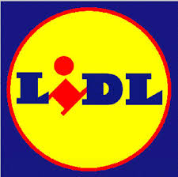

Er moest een tweede hobby verzonnen worden dus dan kies ik mijn werk maar sinds ik het leuk vind om er te werken. Ik werk bij de lidl. Mijn taken bestaan uit schoonmaken, klanten helpen, kassadraaien, vullen enz.
Ik speel heel graag video games. Het spel league of legends is mijn favoriet.